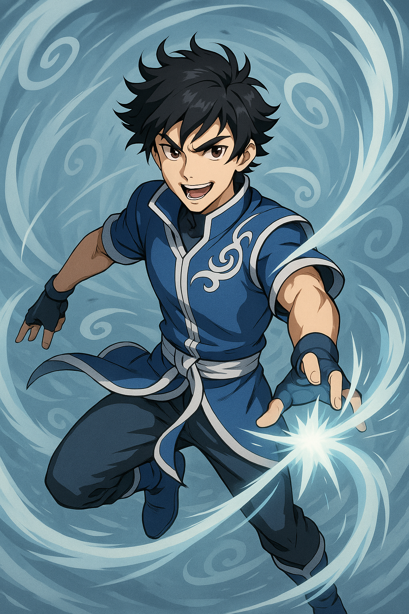

Kaito Tanaka

Alias: The Wind Vanguard
Age / Race / Role: 15 / Human / Aerial Scout, Wind Projection User
Appearance: Lithe and agile with spiky dark-blonde hair and a confident smirk. Wears a green-white combat uniform and fingerless gloves.
Affinities & Energy Types: Wind, Ethereal
Threat Tier: B+/A-Rank
Core Stats (0–10 Scale)
• Power: 6
• Speed: 9
• Technique: 8
• Intelligence: 7
• Defense: 6
• Aura Control: 7
Signature Abilities
• Ethereal Projection
• Gale Burst Dash
• Wind Shield Layer
• Cyclone Deflect Pulse
• Updraft Combo Flurry
Personality Summary
Energetic and witty, often lightening tense moments. Has strong camaraderie with Asa and trust in Rina’s judgment.
Faction or Allegiances: Energetic Guardians